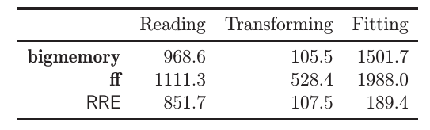

Chapter 15 Memory Efficiency
As put by Kane et al. (2013), it was quite puzzling when very few of the competitors, for the Million dollars prize in the Netflix challenge, were statisticians. This is perhaps because the statistical community historically uses SAS, SPSS, and R. The first two tools are very well equipped to deal with big data, but are very unfriendly when when trying to implement a new method. R, on the other hand, is very friendly for innovation, but was not equipped to deal with the large data sets of the Netflix challenge. A lot has changed in R since 2006. This is the topic of this chapter.
As we have seen in the Sparsity Chapter 14, an efficient representation of your data in RAM will reduce computing time, and will allow you to fit models that would otherwise require tremendous amounts of RAM. Not all problems are sparse however. It is also possible that your data does not fit in RAM, even if sparse. There are several scenarios to consider:
- Your data fits in RAM, but is too big to compute with.
- Your data does not fit in RAM, but fits in your local storage (HD, SSD, etc.)
- Your data does not fit in your local storage.
If your data fits in RAM, but is too large to compute with, the solution will typically be to replace the algorithm you are using. This will typically mean that instead of computing with the whole data, your algorithm will compute with parts of the data, also called chunks, or batches. These algorithms are known as external memory algorithms (EMA).
If your data does not fit in RAM, but fits in your local storage, you have two options. The first is to save your data in a database. This will allow you to use the algorithms provided by your database, or let R use an EMA while loading from your database. Alternatively, and preferably, you may avoid using a database, and work with the data directly form your local storage by saving your data in some efficient manner.
Finally, if your data does not fit on you local storage, you will need some external storage solution such as a distributed database, or distributed file system.
15.1 Efficient Computing from RAM
If our data can fit in RAM, but is still too large to compute with it (recall that fitting a model requires roughly 5-10 times more memory than saving it), there are several facilities to be used. The first, is the sparse representation discussed in Chapter 14, which is relevant when you have factors, which will typically map to sparse model matrices. Another way is to use memory efficient algorithms.
The giblm::giblm function provides an EMA for linear regression. The following if taken from the function’s example.
data(trees)
ff<-log(Volume)~log(Girth)+log(Height)
chunk1<-trees[1:10,]
chunk2<-trees[11:20,]
chunk3<-trees[21:31,]
library(biglm)
a <- biglm(ff,chunk1)
a <- update(a,chunk2)
a <- update(a,chunk3)
coef(a)## (Intercept) log(Girth) log(Height)
## -6.631617 1.982650 1.117123Things to note:
- The data has been chunked along rows.
- The initial fit is done with the
biglmfunction. - The model is updated with further chunks using the
updatefunction.
We now compare it to the in-memory version of lm to verify the results are the same.
b <- lm(ff, data=trees)
rbind(coef(a),coef(b))## (Intercept) log(Girth) log(Height)
## [1,] -6.631617 1.98265 1.117123
## [2,] -6.631617 1.98265 1.117123Other packages that follow these lines, particularly with classification using SVMs, are LiblineaR, and RSofia packages.
15.1.1 Summary Statistics from RAM
If you are not going to do any model fitting, and all you want is efficient filtering, selection and summary statistics, then a lot of my warnings above are irrelevant. For these purposes, the facilities provided by base, stats, and dplyr are probably enough. If the data is large, however, these facilities may be too slow. If your data fits into RAM, but speed bothers you, take a look at the data.table package. The syntax is less friendly than dplyr, but data.table is BLAZING FAST compared to competitors. Here is a little benchmark21.
First, we setup the data.
library(data.table)
n <- 1e6 # number of rows
k <- c(200,500) # number of distinct values for each 'group_by' variable
p <- 3 # number of variables to summarize
L1 <- sapply(k, function(x) as.character(sample(1:x, n, replace = TRUE) ))
L2 <- sapply(1:p, function(x) rnorm(n) )
tbl <- data.table(L1,L2) %>%
setnames(c(paste("v",1:length(k),sep=""), paste("x",1:p,sep="") ))
tbl_dt <- tbl
tbl_df <- tbl %>% as.data.frameWe compare the aggregation speeds. Here is the timing for dplyr.
system.time( tbl_df %>%
group_by(v1,v2) %>%
summarize(
x1 = sum(abs(x1)),
x2 = sum(abs(x2)),
x3 = sum(abs(x3))
)
)## user system elapsed
## 7.252 0.008 7.335And now the timing for data.table.
system.time(
tbl_dt[ , .( x1 = sum(abs(x1)), x2 = sum(abs(x2)), x3 = sum(abs(x3)) ), .(v1,v2)]
)## user system elapsed
## 0.412 0.000 0.410The winner is obvious. Let’s compare filteting (i.e. row subsets, i.e. SQL’s SELECT).
system.time(
tbl_df %>% filter(v1 == "1")
)## user system elapsed
## 0.012 0.000 0.012system.time(
tbl_dt[v1 == "1"]
)## user system elapsed
## 0.016 0.000 0.017The winner is obvious again.
15.2 Computing from a Database
The early solutions to oversized data relied on storing your data in some relational database such as MySQL, PostgresSQL, SQLite, H2, Oracle, etc. Several R packages provide interfaces to these databases, such as sqldf, RDBI, RSQite. Some will even include the database as part of the package itself.
Storing your data in a database has the advantage that you can typically rely on database providers to include very efficient algorithms for the queries they support. On the downside, SQL queries may include a lot of summary statistics, but will rarely include model fitting22. This means that even for simple things like linear models, you will have to revert to R’s facilities– typically some sort of EMA with chunking from the database. For this reason, and others, we prefer to compute from efficient file structures, as described in Section 15.3.
If, however, you have a powerful database around, or you only need summary statistics, or you are an SQL master, keep reading.
The package RSQLite includes an SQLite server, which we now setup for demonstration. The package dplyr, discussed in the Hadleyverse Chapter 13, will take care of translating the dplyr syntax, to the SQL syntax of the database. The following example is taken from the dplyr Databases vignette.
library(RSQLite)
library(dplyr)
file.remove('my_db.sqlite3')## [1] TRUEmy_db <- src_sqlite(path = "my_db.sqlite3", create = TRUE)
library(nycflights13)
flights_sqlite <- copy_to(
dest= my_db,
df= flights,
temporary = FALSE,
indexes = list(c("year", "month", "day"), "carrier", "tailnum"))Things to note:
src_sqliteto starts an empty table, managed by SQLite, at the desired path.copy_tocopies data from R to the database.- Typically, setting up a database like this makes no sense, since it requires loading the data into RAM, which is precisely what we want to avoid.
We can now start querying the database.
select(flights_sqlite, year:day, dep_delay, arr_delay)## Source: query [?? x 5]
## Database: sqlite 3.11.1 [my_db.sqlite3]
##
## year month day dep_delay arr_delay
## <int> <int> <int> <dbl> <dbl>
## 1 2013 1 1 2 11
## 2 2013 1 1 4 20
## 3 2013 1 1 2 33
## 4 2013 1 1 -1 -18
## 5 2013 1 1 -6 -25
## 6 2013 1 1 -4 12
## 7 2013 1 1 -5 19
## 8 2013 1 1 -3 -14
## 9 2013 1 1 -3 -8
## 10 2013 1 1 -2 8
## # ... with more rowsfilter(flights_sqlite, dep_delay > 240)## Source: query [?? x 19]
## Database: sqlite 3.11.1 [my_db.sqlite3]
##
## year month day dep_time sched_dep_time dep_delay arr_time
## <int> <int> <int> <int> <int> <dbl> <int>
## 1 2013 1 1 848 1835 853 1001
## 2 2013 1 1 1815 1325 290 2120
## 3 2013 1 1 1842 1422 260 1958
## 4 2013 1 1 2115 1700 255 2330
## 5 2013 1 1 2205 1720 285 46
## 6 2013 1 1 2343 1724 379 314
## 7 2013 1 2 1332 904 268 1616
## 8 2013 1 2 1412 838 334 1710
## 9 2013 1 2 1607 1030 337 2003
## 10 2013 1 2 2131 1512 379 2340
## # ... with more rows, and 12 more variables: sched_arr_time <int>,
## # arr_delay <dbl>, carrier <chr>, flight <int>, tailnum <chr>,
## # origin <chr>, dest <chr>, air_time <dbl>, distance <dbl>, hour <dbl>,
## # minute <dbl>, time_hour <dbl>summarise(flights_sqlite, delay = mean(dep_time))## Source: query [?? x 1]
## Database: sqlite 3.11.1 [my_db.sqlite3]
##
## delay
## <dbl>
## 1 1349.1115.3 Computing From Efficient File Structrures
It is possible to save your data on your storage device, without the database layer to manage it. This has several advantages:
- You don’t need to manage a database.
- You don’t have the computational overhead of the database.
- You may optimize the file structure for statistical modelling, and not for join and summary operations, as in relational databases.
There are several facilities that allow you to save and compute directly from your storage:
Memory Mapping: Where RAM addresses are mapped to a file on your storage. This extends the RAM to the capacity of your storage (HD, SSD,…). Performance slightly deteriorates, but the access is typically very fast. This approach is implemented in the bigmemory package.
Efficient Binaries: Where the data is stored as a file on the storage device. The file is binary, with a well designed structure, so that chunking is easy. This approach is implemented in the ff package, and the commercial RevoScaleR package.
Your algorithms need to be aware of the facility you are using. For this reason each facility ( bigmemory, ff, RevoScaleR,…) has an eco-system of packages that implement various statistical methods using that facility. As a general rule, you can see which package builds on a package using the Reverse Depends entry in the package description. For the bigmemory package, for instance, we can see that the packages bigalgebra, biganalytics, bigFastlm, biglasso, bigpca, bigtabulate, GHap, and oem, build upon it. We can expect this list to expand.
Here is a benchmark result, from Wang et al. (2015). It can be seen that ff and bigmemory have similar performance, while RevoScaleR (RRE in the figure) outperforms them. This has to do both with the efficiency of the binary representation, but also because RevoScaleR is inherently parallel. More on this in the Parallelization Chapter 16. 
We now demonstrate the workflow of the bigmemory package.
# download.file("http://www.cms.gov/Research-Statistics-Data-and-Systems/Statistics-Trends-and-Reports/BSAPUFS/Downloads/2010_Carrier_PUF.zip", "2010_Carrier_PUF.zip")
# unzip(zipfile="2010_Carrier_PUF.zip")
library("bigmemory")
x <- read.big.matrix("2010_BSA_Carrier_PUF.csv", header = TRUE,
backingfile = "airline.bin",
descriptorfile = "airline.desc",
type = "integer")
dim(x)## [1] 2801660 11pryr::object_size(x)## 616 Bclass(x)## [1] "big.matrix"
## attr(,"package")
## [1] "bigmemory"Things to note:
- The basic building block of the bigmemory ecosystem, is the
big.matrixclass, we constructed withread.big.matrix. read.big.matrixhandles the import to R, and the saving to a memory mapped file. The implementation is such that at no point does R hold the data in RAM.- The memory mapped file,
airline.descwill be there after the session is over. It can thus be called by other R sessions usingattach.big.matrix("airline.desc"). This will be useful when parallelizing. -pryr::object_sizereturn the size of the object. Sincexholds only the memory mappings, it is much smaller than the 100MB of data that it holds.
We can now start computing with the data. Many statistical procedures for the big.matrix object are provided by the biganalytics package. In particular, the biglm.big.matrix and bigglm.big.matrix functions, provide an interface from big.matrix objects, to the EMA linear models in biglm::biglm and biglm::bigglm.
library(biganalytics)
biglm.2 <- bigglm.big.matrix(BENE_SEX_IDENT_CD~CAR_LINE_HCPCS_CD, data=x)
coef(biglm.2)## (Intercept) CAR_LINE_HCPCS_CD
## 1.537848e+00 1.210282e-07Other notable packages that operate with big.matrix objects include:
- bigtabulate: Extend the bigmemory package with ‘table’, ‘tapply’, and ‘split’ support for ‘big.matrix’ objects
- bigalgebra: For matrix operation.
- bigpca: principle components analysis (PCA), or singular value decomposition (SVD).
- bigFastlm: for (fast) linear models.
- biglasso: extends lasso and elastic nets.
- GHap: Haplotype calling from phased SNP data.
15.4 Computing from a distributed file system
If your data is SOOO big that it cannot fit on your local storage, you will need a distributed file system or database. We do not cover this topic here, and refer the reader to the RHipe, RHadoop, and RSpark packages and references therein.
15.5 Bibliographic Notes
An absolute SUPERB review on computing with big data is Wang et al. (2015), and references therein (Kane et al. (2013) in particular). For an up-to-date list of the packages that deal with memory constraints, see the Large memory and out-of-memory data section in the High Performance Computing R task view.
Bibliography
Kane, Michael J, John Emerson, Stephen Weston, and others. 2013. “Scalable Strategies for Computing with Massive Data.” Journal of Statistical Software 55 (14): 1–19.
Wang, Chun, Ming-Hui Chen, Elizabeth Schifano, Jing Wu, and Jun Yan. 2015. “Statistical Methods and Computing for Big Data.” ArXiv Preprint ArXiv:1502.07989.
The code was contributed by Liad Shekel.↩
This is slowly changing. Indeed, Microsoft’s SQL Server 2016 is already providing in-database-analytics, and other will surely follow.↩